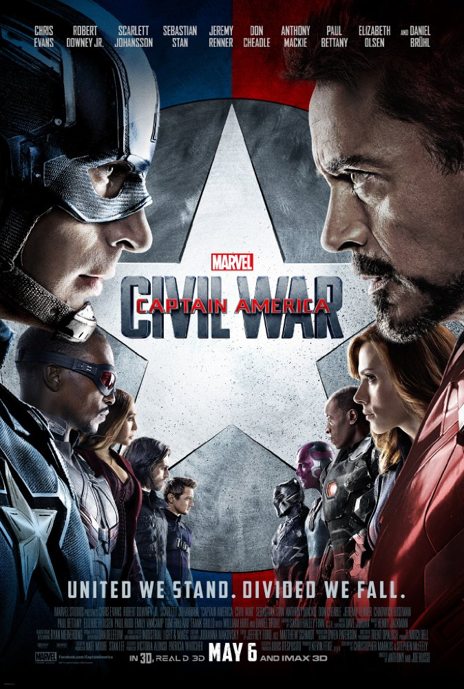
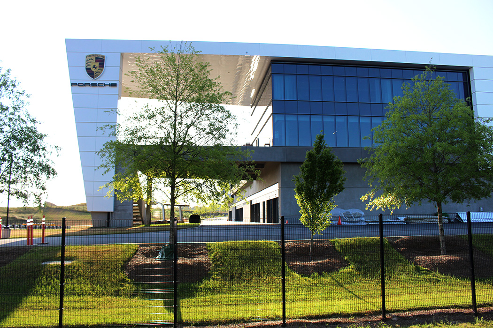

Most Viewed
Captain America: Civil War

Synopsis:
Political pressure mounts to install a system of accountability when the actions of the Avengers lead to collateral damage. The new status quo deeply divides members of the team. Captain America (Chris Evans) believes superheroes should remain free to defend humanity without government interference. Iron Man (Robert Downey Jr.) sharply disagrees and supports oversight. As the debate escalates into an all-out feud, Black Widow (Scarlett Johansson) and Hawkeye (Jeremy Renner) must pick a side.What a treat for the online geeks who post hypothetical questions like “Who do you think would win in a fight between Inspector Clouseau and Emily Bronté?” as Spider-Man, Ant-Man and newcomer Black Panther join the Marvel fray (although Hulk and Thor are otherwise engaged).
The film follows a similar plot arc to Batman V Superman, with superheroes obliged to take responsibility for the collateral human damage of their epic fights.
Directors Anthony and Joe Russo and their scriptwriters, pull off the astonishing feat of continuing to keep afloat with wit and strong characters what could easily have clogged into an over-stuffed mess.
The production was based at the new Pinewood Atlanta Studios, 461 Sandy Creek Road, Fayetteville, which had just hosted its first production, Marvel’s Ant-Man.
A ‘1991’ prologue sees landscapes near the village of Vík in south Iceland standing in for ‘Siberia’ as Bucky Barnes (Sebastian Stan) is programmed to become the Winter Soldier.
The present day story kicks off in ‘Lagos, Nigeria’, where the Avengers’ response to an attack on the ‘Institute For Infectious Diseases’ ends in disaster.
Plans to film ‘Lagos’ action scenes in the Puerto Rico capital of San Juan fell through. There are establishing and background shots, but most of the sequence was filmed back in Atlanta, where the ‘Institute’ itself is the Boisfeuillet Jones Atlanta Civic Center, 395 Piedmont Avenue NE at Ralph McGill Boulevard NE.
The Civic Center, built in 1967 on the site of the old Buttermilk Bottom slum, which housed a theatre, conference and exhibition spaces, is due to be redeveloped.
Economically, its interior was used as the ‘MIT University’ auditorium, where Tony Stark (Robert Downey Jr) ends his motivational speech by handing out grants to the entire audience but is also upbraided by the mother of a young man killed in the battle against Ultron in ‘Sokovia’ – which you’ll remember from Avengers: Age Of Ultron.
The ‘Lagos’ market into which the chaos spills was built in a vacant area of Downtown Atlanta known as The Gulch, between Centennial Olympic Park Drive and Martin Luther King Drive, south of Philips Arena.
The Avengers headquarters is the Aerotropolis Atlanta Porsche Experience Center, One Porsche Drive, Atlanta, which is essentially a theme park for petrolheads with a museum and a drive track where you can live out your fantasies behind the wheel of a Porsche.
 The Avengers headquarters: Aerotropolis Atlanta Porsche Experience Center
Steve Rogers (Chris Evans) and Sam (Anthony Mackie) travel to ‘London’ to attend a funeral (no spoilers) at ‘St Luke’s Cathedral, Chelsea’. Of course, there’s no cathedral in Chelsea, but there is a St Luke’s Church, which was used for the wedding in the 1996 live action film of 101 Dalmatians.
The ‘cathedral’ in this film is actually Peachtree Christian Church, 1580 Peachtree Street NE, Atlanta.
It’s on to ‘Vienna’ for the UN conference to ratify the ‘Sokovian Accords’ and the bomb attack which kills King T’Chaka of Wakanda (John Kani), father of T’Challa (Chadwick Boseman).
Berlin is established with an aerial shot of the Siegessäule, the victory column on Großer Stern in the Tiergarten. The armoured motorcade motors along Kapelle-Ufer alongside the River Spree from Alexanderufer to Reinhardstrasse. It crosses the river by Kronprinzenbrucke toward the Berlin government complex, which supposedly houses the counter-terrorist centre.
While the securely restrained Bucky is being psychologically evaluated, there’s something odd going on at a ‘Berlin’ transformer station. The electricity station to which a huge bomb is delivered is actually the Cherokee Avenue Transformer Station, at the southern end of Cherokee Avenue at Mead Street SE, south of downtown Atlanta.
As the ensuing explosion takes out the power to the city, Bucky’s interrogator is revealed to be Zemo (Daniel Brühl), who knows the codewords to trigger the Winter Soldier into action and facilitates his escape.
The interior of the centre, where Bucky has to face the combined forces of Iron Man, Black Widow and Black Panther to fight his way out, is the lower level of the James M Baker University Center of Clayton State University, in Morrow, about 15 miles south of Atlanta.
For the exterior battle, CGI takes over. Bucky’s attempted escape by helicopter was to have been filmed around the Paul-Löbe-Haus, a government building alongside the Reichstag connected by two pedestrian bridges over the River Spree to the Marie-Elisabeth-Lüders-Haus.
This was all a bit too close to the centre of German government to have copters and explosions, so a rather fanciful CGI version of the buildings and walkway are used.
Steve and Sam manage to rescue Bucky, who reverts to his normal self, as the Avengers are split into opposing teams.
The airport parking garage where Captain America’s faction, including Hawkeye (Jeremy Renner), Scarlet Witch (Elizabeth Olsen) and now Ant-Man (Paul Rudd) is the AT&T Drive Studio Parking Garage, 759 West Peachtree Street NW, between 4th and 5th Streets NE, Midtown Atlanta.
The airport seemingly alongside, where battle lines are drawn and the two opposing groups engage in a spectacular battle is Leipzig/Halle Airport in Schkeuditz, several miles northwest of Leipzig, and over 90 miles from Berlin. As you might guess from the rampant destruction, most of this setting is recreated digitally for the epic battle. Leipzig/Halle also stands in for Berlin's 'Tegel' airport in 2011 Liam Neeson thriller Unknown.
After the fight, there’s a return to ‘Siberia’ to wind up this plot but, with so many of the Avengers team under high-security confinement, it’s safe to assume this conclusion is open ended.